In this page, we will inform you about various hardware we found and tell you their functions and uses in an operating computer. To the left is a table of contents that will allow you to navigate and choose the hardware piece that you are interested in. In each section, you will be provided with a description along with some images for you to get an idea of what the hardware piece looks like. If you are really interested in the information you see for each hardware piece, you may also check out the Wikipedia page about that certain piece that goes into advanced depth. Just click the sub-heading of the piece of hardware and began your reading!
Right off at first glance you will probably see and large piece green board, this piece of hardware is called the motherboard. This is the piece which keeps everything together and connected. It is like a road for other hardware to communicate to each other and send data throughout. It holds the CPU, memory chips like RAM and ROM, power connection, and other elements that may be needed to operate the computer. The silicon material used for the motherboard is ideal because of its semiconductive property is superb in transferring data and power.
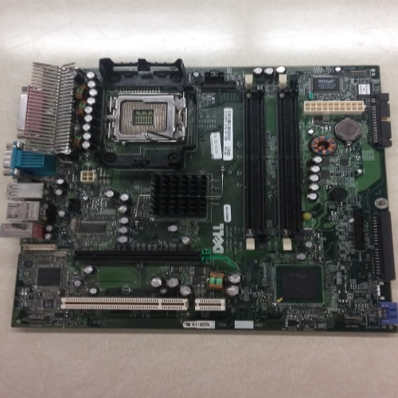When disassembling our computer, we were unable to take out our power supply. The problem was that the screws were in spots where a screwdriver wouldn't reach. Anyways, the power supply is exactly what it sounds like. It supplies power to the computer. It takes AC and changes it into low-voltage DC for parts of the computer to use. The unit regulates the voltage to an adequate amount, which allows the computer to function smoothly. Since this part of the computer is the first to receive electricity, it is the most vulnerable to power surges, spikes, blowouts, etc. Therefore in addition to regulating power for other hardware, it is also built to handle fluctuations in electricity. As many pieces of hardware do, these units can overheat. The logical solution being, to attach a fan. In our case, the fan at the top was connected to our power supply unit.
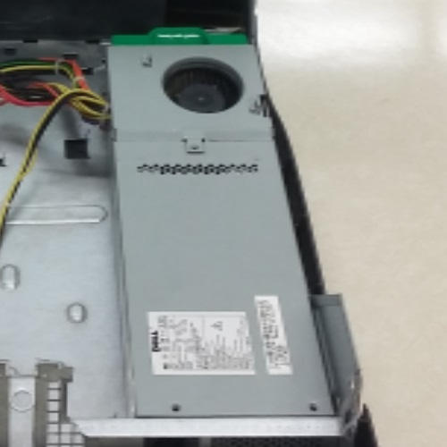Random Access Memory (RAM) is a form of computer data storage which stores frequently used program instructions to increase the general speed of a system. A random-access memory device allows data items to be read or written in almost the same amount of time irrespective of the physical location of data inside the memory. How it works is relatively simple. Imagine you are looking for your friend in a building. This is serial access, you start at room one and go to room two, three, four etc., until you get to the room where your friend is. It’s an exhausting way of finding something but if you know which floor and number then you can go straight there. It’s called random access because it can go all over the place and don’t have to go in order. So RAM is a grid of storage locations for data and instructions. While a program is running it constantly being read and changed, meaning in order for your computer to work quickly, you would need fast RAM and lots of it.
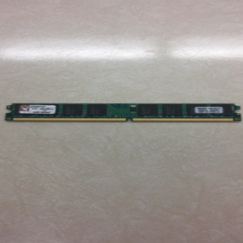CD-ROM stands for Compact Disc, read only memory. CD-ROMs are optical compact discs which are commonly used to store data and transfer it across physical locations from reading site to reading site. Most CD-ROMs employ 2 different laser beams (one for DVD one for CD). A diode inside the laser assembly emits a laser beam, which is focused through a lens. Scaling the laser's power to different levels allows the drive to read discs (using a low power setting) or write them (at high power). The discs themselves are thin tough layers of polycarbonate, a plastic. The surface of the disc is layered with microscopic pits that represent data, usually arranged in a spiral formation. The reading laser beam scatters when it hits a pit in the spiral. When the beam lands, and the flat spots between the pits are called, it bounces back into a pickup in the laser assembly. The drive electronics then translate the pit-land data stream/ratio into binary which will then be turned into accessible bytes of data.
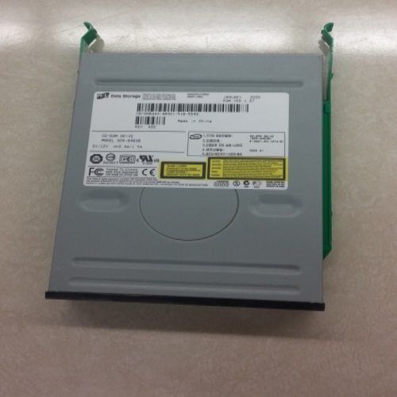Usually near the edges of the computer you will find a small rectangular box with a circuit board attached to one side, this is called a hard disk drive. The hard drive is the computer's long term memory which uses magnetic states on several disks to store permanent information. This type of memory is non-volatile which means that even though the computer isn't provided with power, the information within the hard drive still remains. If you are writing to the hard drive and the computer does shut down, the information may get corrupted because it hasn't fully written and saved all your information. On these disks, there are many magnetic states that can either represent a 0 or 1 which the computer can read as binary. Hovering over the disks are magnetic heads that are able to do this task in converting the magnetic state to binary. This magnetic head is also able to write to these disk in the magnetic state it needs to be in.
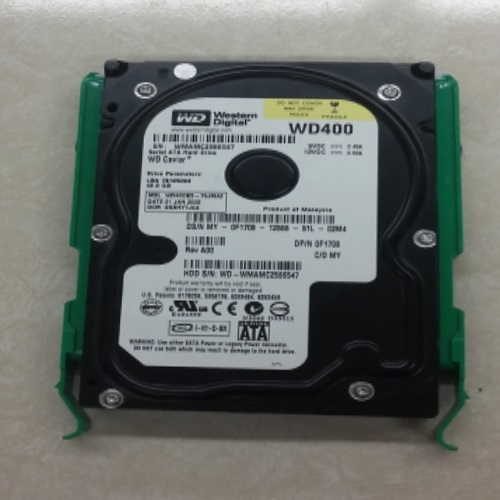The floppy disk drive is something that has nearly disappeared. Few people nowadays know what one is. Basically speaking, a floppy disk drive is an older, bigger version of a USB. This means an FDD reads on writes data to a small disk. A floppy disk drive was one of the first forms of portable storage. Today as technology has advanced we call our USBs, thumb drives, because that's how big they are. The floppy disk drive can be on the outside or inside of a computer. In our case, it was on the inside. Floppy disks work in a similar way to cassettes and the magnetic strip on credit cards. When storing info on the drive, a head manipulates the magnetic coating on the drive. When reading, the computer reads the magnetic coating, converts it into binary, then into whatever language it's set in. Before recording a special head erases the drive, in order for the drive to be written on again.
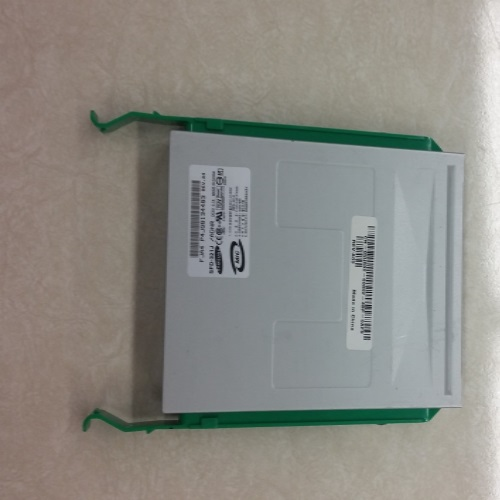CPU stands for Central Processing Unit (also known as a microprocessor) often called the “brain” of the computer. Its is the electronic circuitry within a computer that carries out the instructions of a computer program by performing the basic arithmetic, logical, control and input/output operations specified by the instructions. Most CPUs are synchronous circuits, which means they employ a clock signal to pace their sequential operations. The clock gives a pulse to the CPU like a drum beat to march to, to keep things in order. Nearly all modern CPUs represent numbers in binary form, using only 1s and 0s to represent information. As you use your computer, the processor starts generating a lot of heat which is caused by the internal electrical energy of the components, and gets warmer the harder the components have to work. Improper maintenance of heat and overheating of the processor can reduce the lifespan or cause irreparable damage to the components in the processor, including components like circuits, microchips, RAM, or hard drives, and makes the computer inoperable. In order to avoid damaging the components and prevent loss of data, it becomes essential to have good cooling equipment like a CPU fan. The CPU fan is critically necessary to ventilate the heat generated from the components, and actively cools the processor by bringing in the cooler air before the heat damages the computer components. A heat sink is a passive heat exchanger that transfers the heat generated by the CPU to a fluid medium, often air or a liquid coolant, where it is dissipated away from the device, thereby allowing regulation of the device's temperature at optimal levels. In computers, heat sinks are used to cool central processing units or graphics processors. A heat sink is usually made out of copper and/or aluminium. Copper is used because it has many desirable properties for thermally efficient and durable heat exchangers.
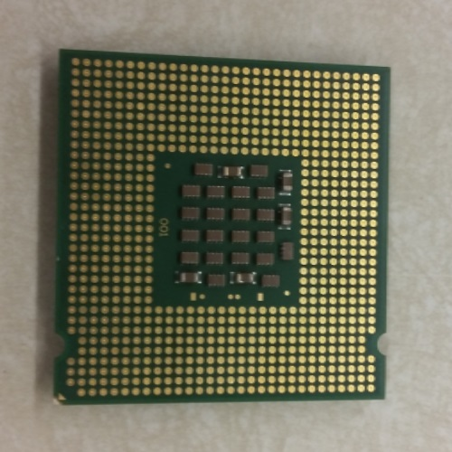 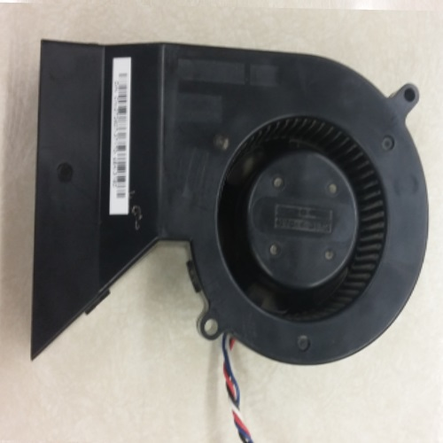 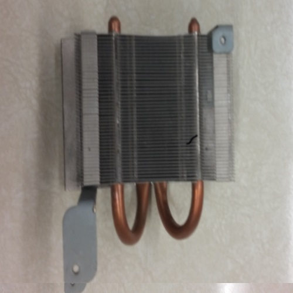BIOS stands for Basic Input/Output System. It is the program that a computer’s microprocessor uses to get the computer system started after you turn it on. This program also manages the flow of data between a computer’s operating system and other devices such as the hard disk, keyboard, and printer. BIOS functions by first identifying and then testing all the hardware components (including the hard disk and floppy drives). Finally, it locates another valid operating system to which it can transfer control.
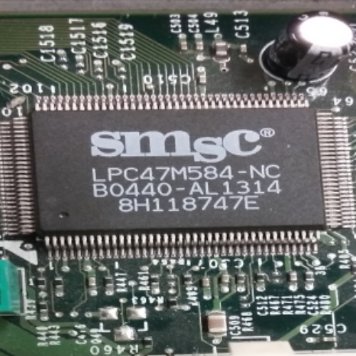Somewhere along the motherboard you may see some slots that are long and narrow where are card can be inserted into, these are your expansion slots where you can insert various types of cards to add more capabilities to your computer. Examples of expansion cards could include, graphic/video, sound, modem or a network card. All these will allow the computer to have more potential. Today, most computers you can purchase already come pre-installed with these cards, but there is also room for improvement for anyone wanting to buy more advanced cards, like graphics cards. Most expansion cards today are usually locked into what is called the PCI slot because it is able to handle the rapid and large amounts of data travelling throughout the computer.
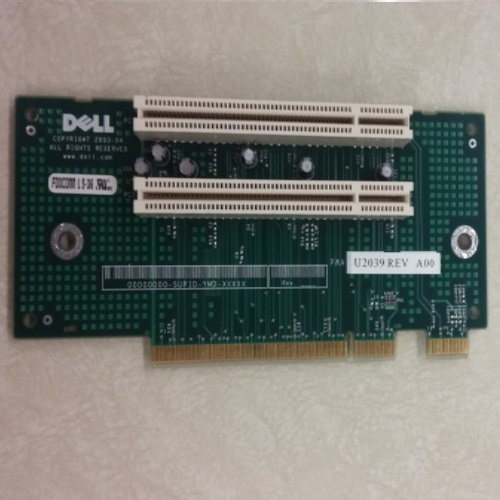